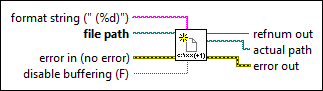

Create File with Incrementing Suffix VI
Owning Palette: Advanced File VIs and Functions
Requires: Base Development System
Creates a file and appends an incrementing number suffix to the filename if the file already exists at a specified path. If the file does not exist, this VI creates the file without appending an incrementing number suffix to the filename.

 Add to the block diagram Add to the block diagram |
 Find on the palette Find on the palette |